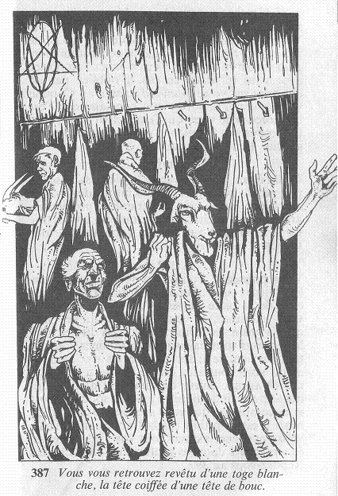

Le tunnel obscur dans lequel vous venez de vous glisser n'est pas très long, et aboutit bientôt à une porte que vous poussez avec précaution. Elle s'ouvre sur une pièce déserte qui doit être une sorte d'antichambre ou de vestiaire, car vous y remarquez de nombreux vêtements, ou, plus exactement, de nombreux habits de cérémonie. En effet, trente ou quarante toges blanches sont pendues à des patères et, posés sur des étagères, vous pouvez voir des masques. De macabres masques, qui sont en fait des têtes de bouc ! Au fond de la pièce, à gauche, vous apercevez une porte. Perplexe, vous vous demandez ce que vous allez faire. Un frisson vous parcourt alors l'échiné, car le bruit que vous entendez ne vous laisse aucun doute. Quelqu'un vient ! D'après les murmures de voix qui s'amplifient peu à peu, c'est tout un groupe de personnes qui se dirige vers la pièce où vous vous trouvez. Où vous cachez ? Vous jetez un coup d'œil autour de vous, et vous décidez de prendre le risque de vous mettre contre le mur, près de l'autre porte, afin qu'elle vous cache lorsque quelqu'un l'ouvrira. La porte ne tarde pas, en effet, à s'ouvrir sur une quarantaine de personnes bavardant et gesticulant avec excitation. Vous en profitez pour vous mêler à elles, et passer ainsi inaperçu en imitant leurs mimiques. En parlant fort, elles poussent du coude un homme qu'elles nomment Frère Meyna'ch et, d'après ce que vous pouvez comprendre, il semble que cette nuit soit pour elles de la plus grande importance. Vous continuez à les imiter, souriant, éclatant de rire même, et vous vous retrouvez finalement revêtu d'une toge blanche, une tête de bouc enfoncée sur votre propre tête !

Maintenant, au milieu de vos nouveaux « compagnons » vous pouvez quitter la pièce en empruntant le chemin par où ils sont venus . Mais si vous êtes trop terrorisé pour les suivre, vous pouvez essayer de rester en arrière, tandis qu'ils disparaissent, priant le ciel pour qu'ils ne vous remarquent pas .